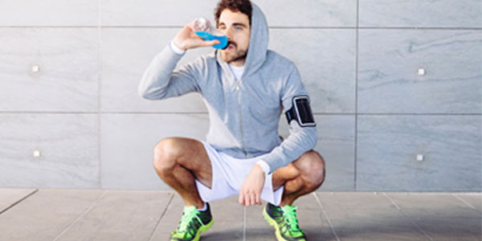
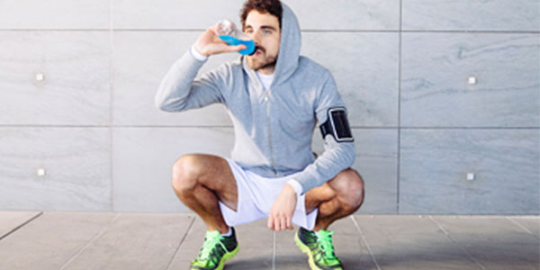
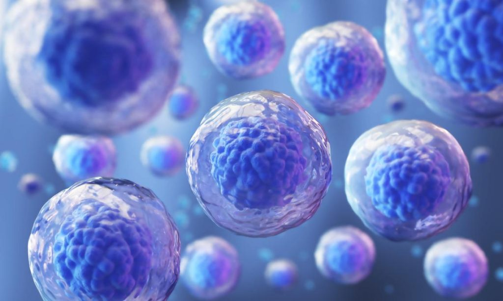

Efectos biológicos detrás de cyclon y las bebidas energéticas
- Las células madre musculares se encuentran entre la membrana basal y el sarcolema de las fibras musculares, y son conocidas como células satélite. Estas células permanecen a la espera hasta que son activadas debido a un estímulo; daño muscular. Las células satélite se dividen y posteriormente se diferencian en mioblastos, célula precursora de las fibras musculares. Ya que están las células agrietadas, estas han de ser reparadas para crecer y fortificar el músculo. Las fibras musculares aumentan la cantidad de glucógeno, lo que mejora la resistencia debido a que dispone de glucosa 1- fosfato lo que permite la glucólisis (descomposición parcial de la glucosa). Nuestra bebida servirá como un catalizador para este proceso, reduciendo el tiempo enormemente, a un efecto inmediato a los 30 minutos. Esto hace de nuestro producto único en comparación con recuperaciones de 3-7 días o incluso alargando a un par de meses.
- La lipólisis es el proceso biológico en el cual en una serie de eventos hormonales, metabólicos y celulares un organismo pierde grasa. En este proceso los triglicéridos almacenados en los adipocitos (células de grasas) se descomponen en 3 ácidos grasos y glicerol a través de la acción de enzimas como la lipasa. Nuestras bebidas son muy bajas caloricamente por lo que lograr esa pérdida de grasas será de gran ayuda. Por ello, nuestra bebida muy baja caloricamente en torno a 150 calorías ayudará a procesar más rápido.
- La adenosina es un neurotransmisor que contribuye a la relajación y la somnolencia, por ello al bloquear estos receptores, la cafeína reduce tal sensación de fatiga e incrementa el estado de atención y vigilancia. No solo eso, la cafeína aumenta la liberación de catecolaminas (hormonas del estrés) como la adrenalina las cuales contribuyen a una elevada frecuencia cardíaca, flujo sanguíneo muscular y eficiencia energética. Por ello el incremento de teobromina puede tomar un gran papel en mantener un alto nivel de productividad a la hora de hacer ejercicio; incluyendo deportes, levantamiento de pesas o correr durante periodos de tiempo prolongados. Nosotros utilizamos el valor ideal previamente calculado por mis compañeras, ya que un exceso puede producir riesgos innecesarios, por ello ofrecemos rangos para pesos distintos para potenciar al máximo las capacidades a la hora de realizar ejercicio. 